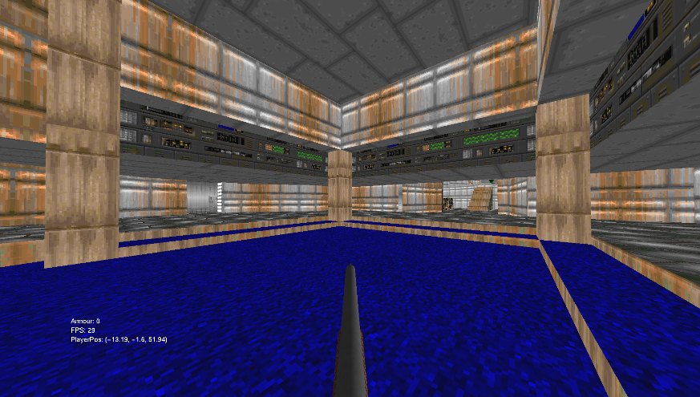
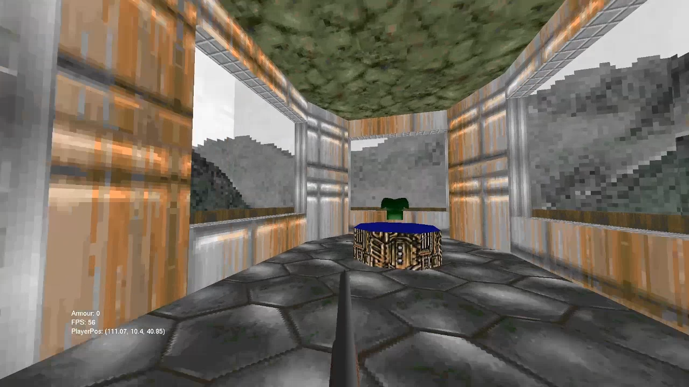
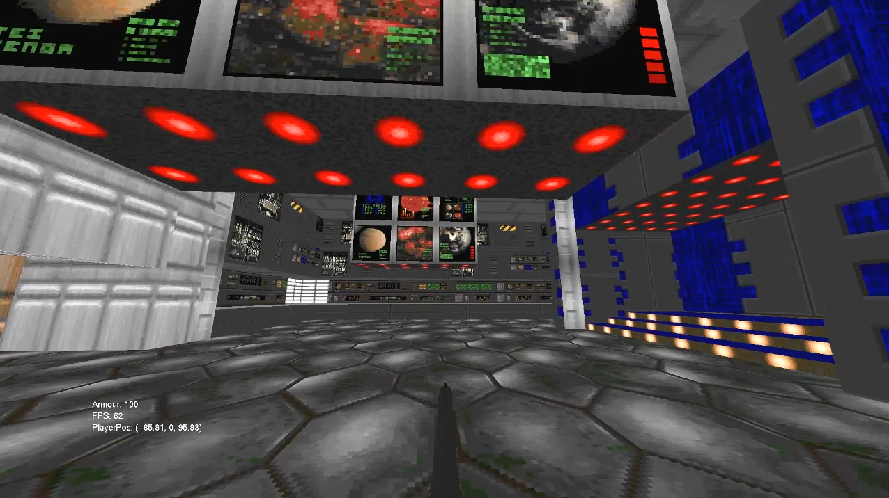

|    |
SummaryThis project is an E1M1 3D model being rendered in OpenGL using FreeGLUT. It was made for my 'Fundamentals of Game and Graphical Systems Development' module submission at University (Year 1, Semester 2). For the assignment, we were tasked to render multiple, textured 3D models using FreeGLUT and C++. I was able to find a 3D model of E1M1 online, which I then modified and UV unwrapped. One of the biggest challenges of the project was the character controller, and how to handle collisions. I went with a nav-mesh system for collisions, which also allowed me to set the players height when traversing the map. There is another (invisible) mesh of only the map floor, which covers the entire walkable area. Which allows me to check whether the player is above walkable ground (if not it counts as a collision), and lets me set the height of the player as they walk up/down stairs, drop off of ledges, etc. Features
What I learnedThis project gave me and introduction to 3D rendering. It has taught me the basics of rendering using OpenGL, and what I have learned from this will help me in future projects to be able to make more advanced rendering software. It helped me improve my problem solving skills. I also gained more experience using C++, and using good programming practices. |